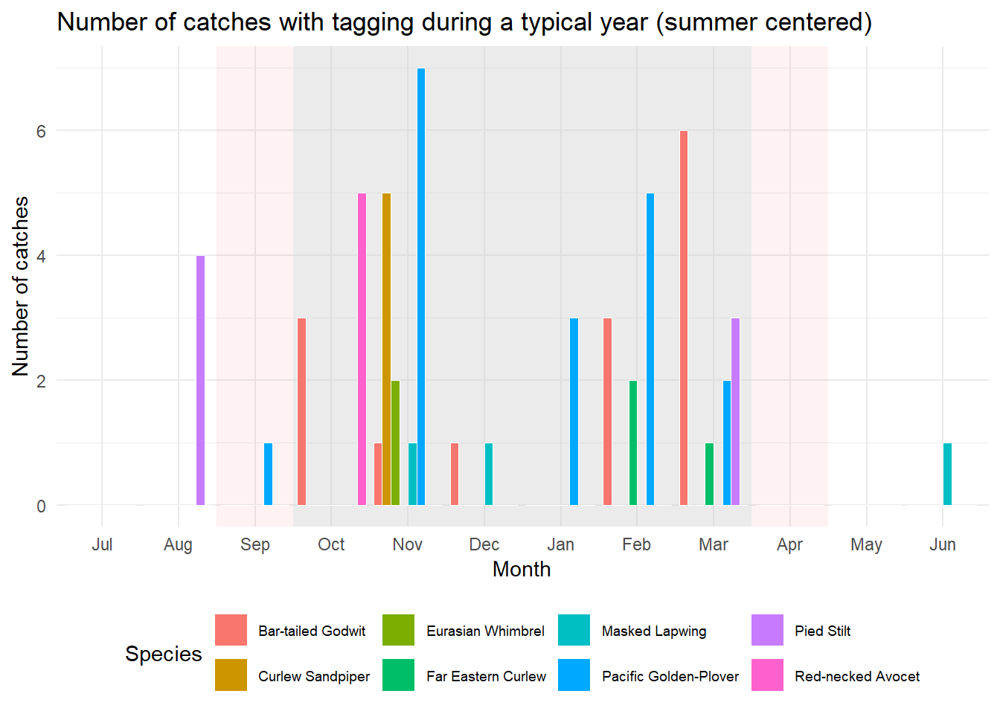
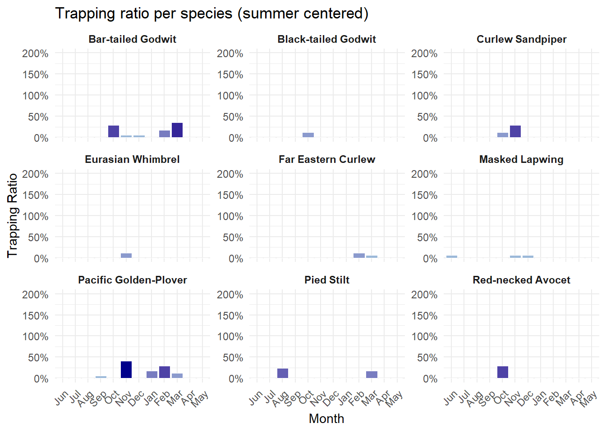
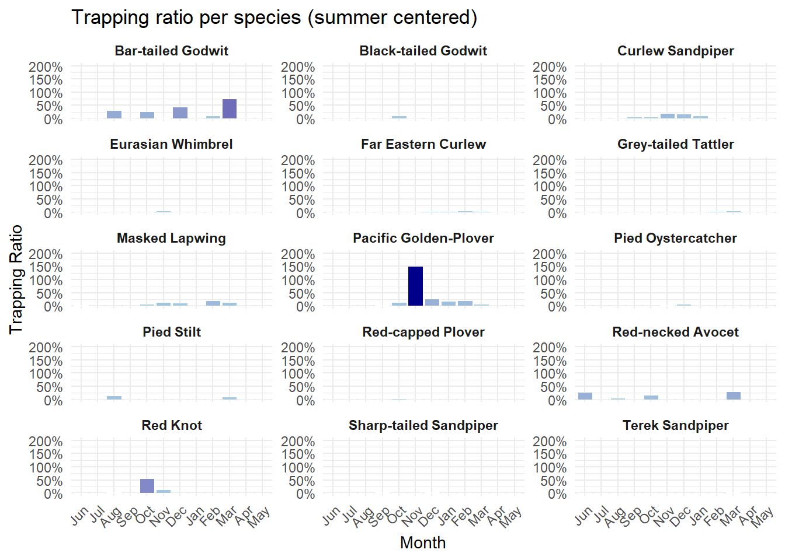

| Shorebird Trapping Summary | ||||||
|---|---|---|---|---|---|---|
| Based on 29 unique trapping dates and 237 birds caught between Dec 2021 and Oct 2026 | ||||||
| Proportion (%)1 | Individual trapped | Day trapped2 | Average trapped3 | Chance to catch4 | Total Tagged | |
| Pacific Golden-Plover | 29.5 | 70 | 15 | 2.41 | 0.5 | 18 |
| Bar-tailed Godwit | 23.6 | 56 | 12 | 1.93 | 0.4 | 16 |
| Masked Lapwing | 8.4 | 20 | 11 | 0.69 | 0.4 | 3 |
| Curlew Sandpiper | 8.0 | 19 | 8 | 0.66 | 0.3 | 7 |
| Red-necked Avocet | 10.1 | 24 | 5 | 0.83 | 0.2 | 5 |
| Far Eastern Curlew | 2.1 | 5 | 4 | 0.17 | 0.1 | 3 |
| Red Knot | 8.9 | 21 | 3 | 0.72 | 0.1 | 0 |
| Grey-tailed Tattler | 1.3 | 3 | 2 | 0.10 | 0.1 | 0 |
| Pied Oystercatcher | 1.3 | 3 | 2 | 0.10 | 0.1 | 0 |
| Pied Stilt | 3.0 | 7 | 2 | 0.24 | 0.1 | 7 |
| Sharp-tailed Sandpiper | 0.8 | 2 | 2 | 0.07 | 0.1 | 0 |
| Black-tailed Godwit | 1.3 | 3 | 1 | 0.10 | 0.0 | 2 |
| Eurasian Whimbrel | 0.8 | 2 | 1 | 0.07 | 0.0 | 2 |
| Red-capped Plover | 0.4 | 1 | 1 | 0.03 | 0.0 | 0 |
| Terek Sandpiper | 0.4 | 1 | 1 | 0.03 | 0.0 | 0 |
| 1 Proportion (%) of individuals trapped within the relative species group versus the total number of birds trapped in all species groups | ||||||
| 2 Number of days at least one individual of the relative species group has been trapped. | ||||||
| 3 Average number of individuals trapped per event within the relative species group. | ||||||
| 4 Chance (1 = 100%) to catch at least one individual of the species per trapping event (calculated over the complete timeline). | ||||||

